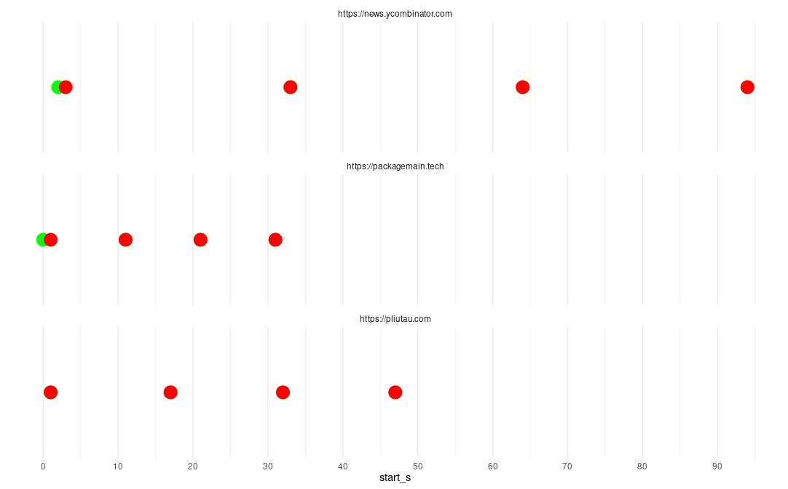

I thoroughly dislike ‘hot takes’ comparing programming languages based solely on a “feel” or differential familiarity (“I know this one better therefore it is better) so when I came across a blog post detailing a small learning project written in Gleam I wanted to understand what advantages and disadvantages that language brings to the problem. This post details a side-by-side comparison after rewriting the project in R with a goal of better understanding the approach on both sides.
I thoroughly dislike ‘hot takes’ comparing programming languages based solely on a “feel” or differential familiarity (“I know this one better therefore it is better) so when I came across a blog post detailing a small learning project written in Gleam I wanted to understand what advantages and disadvantages that language brings to the problem. This post details a side-by-side comparison after rewriting the project in R with a goal of better understanding the approach on both sides.

Gleam is a relatively new language - first released in 2016 and reaching version 1.0 in March this year. It’s implemented in Rust, but runs on BEAM, Erlang’s virtual machine. It’s garbage collected but compiles down to JavaScript, the combination of which makes it fairly fast.
It’s type-safe with strict immutability and embraces a functional paradigm - no loops at all, just recursion. It’s pretty straightforward to learn in a day or so if you’re already familiar with programming and there’s a nice online language tour with a built-in playground. In terms of a package ecosystem the repository has just under 600 packages but because it can also run Elixir packages, it actually has a lot of packages available - hex.pm has around 16k packages.
A simple ’Hello, World!” looks like this
import gleam/io
pub fn main() {
io.println("hello, friend!")
}hello, friend!but outside of the playground you need to go through a compile step to actually run the code. Like Rust, it helps you get to the end goal, with no null values, no exceptions, and clear error messages.
It seems to be used a lot for web development, but I’m less familiar with the common use-cases.

R has been around longer - first released in 1993 and currently at version 4.4.1. It’s implemented in C with some self-sufficient code in R and leaning on numerical libraries in Fortran. It’s also garbage collected but it’s an interpreted language, so it runs a Read-Evaluate-Print-Loop (REPL) in which you can enter expressions and get their results back without having to compile the entire ‘program’. For this reason, it’s frequently used interactively in the lisp sense where you essentially have a conversation with the computer about some data, asking questions and getting responses, until you build up the full ‘script’ of what you want to achieve.
It’s dynamically typed with no type-safety guarantees - a function returns what it returns. It supports a variety of paradigms, both functional and object-oriented, and developers can choose to float between these freely even in a single script.
The canonical package repository CRAN currently hosts over 21k packages but users can also download package directly from other repositories such as r-universe which hosts nearly 26k (including copies of all of the CRAN packages).
There’s a lot less ceremony involved in an interpreted language, so a ‘Hello, World!’ is as straightforward as
"Hello, World!"## [1] "Hello, World!"since evaluating an object (a variable or value) prints it by default.
R started life in the statistics department of the University of Auckland and as such has excellent numerical support for statistics and graphing. It’s often referred to as “a programming language for statistical computing” but I hate the connotation that it’s only a “statistical language” - it’s sufficiently general purpose that you can build games, make generative art, write and play music, or build a full webpage. I’ve struggled to find things it can’t do (at all - there’s plenty of things at which it’s far from the best choice).
The post I read details a ‘first experience’ with the language and I fully agree with the author that it’s useful to learn by doing - you learn with your hands, not your eyes.
It describes using Gleam to write a program which takes in a configuration containing some URLs to query at given intervals, and optionally a string to search for in the content of that URL. The resulting status code and whether or not the text was matched are stored in a database, and the program is run concurrently; the three sites (in this case) are queried in parallel jobs at their respective intervals.
It’s a fine post - perhaps a little light on the explanation of how the code came about and how it all ties together, but the ideas are mostly there. My post isn’t about critiquing the code or the post, but rather seeing how a similar thing might look in R.
I had a look at the code in the post (which didn’t seem to be all of it) and the rest of the code on GitHub and figured this seemed like a small enough project that I could understand all of it and try to consider the advantages and disadvantages of using Gleam for this task. As with pretty much any small project I can imagine building it in R (for better or worse) and I wanted to really dig into what makes a project a good or bad fit for R.
Sure, R can be “slow” compared to compiled languages, but that depends on what you’re doing - if it isn’t performance-critical (“oh, no, it takes 0.3s to run once a day vs 0.3ms - what ever will you do with all that time you saved?”) then I consider the time one spends writing and later reading the code itself to factor into the ‘speed’.
There probably aren’t many webservers built in R, but R has plenty of web-scraping support. So, what does a strongly typed language like Gleam offer that R doesn’t?
I updated my Gleam installation (I’d used it for some Exercism exercises but it was considerably out of date now) and ran the project - it compiled and ran just fine.
The post starts out by defining a configuration in yaml
websites:
- url: https://packagemain.tech
interval: 10
- url: https://pliutau.com
interval: 15
- url: https://news.ycombinator.com
interval: 30
pattern: gleamand I’m already confused - my guess is that yaml is a widely used configuration
filetype and offers ‘naming’ of the different nested components, but having type
safety means writing a parser for that which does the validation. The post
does detail that and defines a Config type consisting of a list of Website
types. This seems to be a first point of difference:
📝 Note
Static typing means that validation is enforced.
In R I might use a CSV to store such a configuration with one line per site. Now,
CSV doesn’t guarantee any type safety either, but once I read it into a data.frame
the columns will have some types. They might not be what I naively expect, but
if they look like numbers they’ll probably be numbers.
It seems like that would be a better shape for this data, but I suppose if the configuration doesn’t ‘rectangle’ very well, CSV might be less appropriate. I think this is where my confusion arose - but how else would you get data into the types of the program apart from parsing and validation?
If I wanted to ingest such a configuration I’d probably do some defensive coding and assert that the columns are what I think they should be, at least as far as R’s atomic type system goes.
Something like
config <- function(file) {
conf <- read.csv(file, header = TRUE)
expected_cols <- c("url", "interval", "pattern"),
stopifnot(
"CSV in unexpected format" = colnames(conf) == expected_cols
"url should be character" = is.character(conf$url),
"interval should be numeric" = is.numeric(conf$interval),
"pattern should be character" = is.character(conf$pattern)
)
conf
}That’s perhaps an unfortunate ratio of assertions to implementation, but it gets the job done.
One could go even further in either language and validate that the URL appears to be valid and that the interval is greater than 0, but I don’t have a good sense for when one should do that.
This does raise an interesting point, too - in R I’m very familiar with using
data.frame as a structure, but that’s loosely constrained; it’s a list of
vectors of the same length, but those vectors could be anything - if we extend
the idea to {tibble}s then it we can even have a list containing a list
containing vectors with varying lengths!
tibble::tibble(
id = 1:3,
items = list(
c("apples"),
c("beans", "carrots"),
c("dates")
)
)## # A tibble: 3 × 2
## id items
## <int> <list>
## 1 1 <chr [1]>
## 2 2 <chr [2]>
## 3 3 <chr [1]>Making that strictly typed would mean defining something like
Cart(List(Vec(Int), List(Vec(String))))which can go further and define each list of items
Items(Vec(String))
Cart(List(Vec(Int), List(Items)))Mario Angst on Mastodon was trying to work with more or less this exact problem in the new S7 OOP system which really demonstrated how complex that becomes compared to what is typically done in R, and part of the motivation for writing this post is to better understand where that prevents bugs or issues.
In Mario’s case it was validating that columns have a particular structure. In the case of this project it is protecting against an invalid configuration. If I try to break the configuration by making one of the intervals a string
- url: https://packagemain.tech
interval: "10"and build the project… it works just fine. So what’s going on? The config parser where the interval is read has
int.parse(val_str)so it ‘recovers’ from the case where a string is used. Should it just fail there? Or is combining type safety and a ‘try to fix’ approach the right way? Isn’t that defensive programming?
If I use a number as the URL
websites:
- url: 1
interval: 10it does indeed break properly
$ gleam run
Compiled in 0.07s
Running websites_checker.main
exception error: #{function => <<"main">>,line => 32,
message =>
<<"Failed to load config: Invalid config file format">>,
module => <<"websites_checker">>,gleam_error => panic}
in function websites_checker:main/0 So, that’s good.
The next piece - querying the URL - also left me a bit lost. I could see that the
post details saving the CrawlResult from the crawler, and I could see a call to
crawl_url, but it didn’t show the actual crawler. The
full code
(updated since the post was written, I believe) does have that and seeing that
resolved that confusion.
The actual querying and parsing was all done here
let assert Ok(req) = request.to(url)
case hackney.send(req) {
Ok(response) -> {
let pattern_matched =
pattern != "" && response.body |> string.contains(pattern)and I wanted to understand this part - it seems to use the gleam/http/request
package to create the Request
object, and the gleam/hackney package to send the request, producing a
Response
object.
This was my next source of confusion - what was the ‘type’ of the body of the
response? The body field is used in the pattern matching with string.contains(pattern)
but is that doing a search on JSON? HTML? XML? I suspect this was my unfamiliarity
with strongly typed languages showing - the documentation actually does say
The body of the request is parameterised. The HTTP server or client you are using will have a particular set of types it supports for the body.
so it’s whatever the server sends. This seems… un-type-safe?
📝 Note
The outside world is messy.
What I really wanted to do was just fetch the data with that code and see what the result looks like, but that’s not how compiled programs work.
My guess is that there are two options; write a different ‘main()’ entrypoint that calls just this bit of code and outputs the result, or some sort of debug statement during runtime (like this).
I recall seeing someone make the statement along the lines of “if you need a REPL, it just shows you’re not familiar enough with the language” and I think they missed the point that it’s not about seeing what some function should do, it’s about what does it do to this data?
I’ll get to how I did find out, but the quick answer is that the server responds with HTML, so the matching is being performed on one long string. Maybe not ideal - I’d expect to at least limit the search to the ‘body’ of the page, but it’s a toy project so whatever.
Once the site has been scraped, the results are stored in a database. Writing to SQLite happens via a manually written query, but the libraries appear to handle the rest of that interaction quite nicely
sqlight.query(
"insert into websites (started_at, completed_at, status, pattern_matched, url) values (?, ?, ?, ?, ?)",
on: db,
with: [
sqlight.int(result.started_at),
sqlight.int(result.completed_at),
sqlight.int(result.status_code),
sqlight.int(result.pattern_matched |> bool.to_int),
sqlight.text(result.url),
],
expecting: mock_decoder,
)The last critical piece was looping over the sites defined in the configuration.
Gleam doesn’t have loops, but it does have a list.each() that can essentially
do a loop. The problem is that this isn’t just one loop over the sites, it’s also
a loop to repeat the scrape at a given interval.
Part of the appeal of Gleam is concurrency, so ideally we’d do the scraping for each site independently at the same time. That’s achieved by writing a recursive function to repeat itself after waiting for some time
fn process_website_recursively(
db_conn: sqlight.Connection,
website: config.Website,
) {
[...]
process.sleep(website.interval * 1000)
process_website_recursively(db_conn, website)
}which is then called in the loop over the sites
list.each(c.websites, fn(w) {
process.start(fn() { process_website_recursively(db_conn, w) }, True)
})Gleam then kicks off a process for each site, running on its own scheduled intervals, and performs the operations.
After letting it run for a bit I opened up the generated SQLite database and confirmed that it had indeed captured the relevant information for the three configured sites. Cool!
Now, how would I do it in R?
The very first thing I do in an R project is to start interacting with the data itself; maybe plotting it if I already have it, but if I don’t, then getting a sample of it to play around with is a first step.
Since R has a REPL, I can evaluate expressions straight away without building a ‘program’ around them. I do write my expressions in an actual file in RStudio, and can execute them individually in a REPL with a key combo, so I get the best of both worlds of recording what I’m doing and having the results immediately at hand.
With a new .R file open I can type out and run
url <- "https://jcarroll.com.au"
resp <- httr2::request(url) |>
httr2::req_perform()This uses the {httr2} library to build a request object and perform the request.
I can inspect the resp object to see what sort of thing I’m getting
resp## <httr2_response>## GET https://jcarroll.com.au/## Status: 200 OK## Content-Type: text/html## Body: In memory (32012 bytes)📝 Note
R does have some properly classed objects, but they're less common.
Okay, it’s text/html - that means I can extract the contents with something like
httr2::resp_body_html() or, if I just want one big string…
content <- httr2::resp_body_string(resp)Looking at the first chunk of characters, and cleaning it up a little for presenting here, I see
cat(gsub("[ ]*\\\n\\\n", "", substr(content, 1, 521)))## <!DOCTYPE html>
## <html lang="en" itemscope itemtype="http://schema.org/WebPage">
## <head>
## <meta charset="utf-8" />
## <meta http-equiv="X-UA-Compatible" content="IE=edge">
## <meta name="viewport" content="width=device-width, initial-scale=1.0, maximum-scale=1.0">
##
## <meta name="author" content="Jonathan Carroll"/><script type="application/ld+json">
## {
## "@context": "http://schema.org",
## "@type": "WebSite",
## "name": "Irregularly Scheduled Programming",
##
## "url": "https:\/\/jcarroll.com.au"
## }Great - that’s the HTML response for this blog.
I don’t know how anyone codes without being able to just crack open a piece of data and see what it looks like inside.
I’ll want to store the config, and as I noted above I could store that in a CSV.
For now I’ll just load a data.frame containing that data
sites <- data.frame(url = c("https://packagemain.tech",
"https://pliutau.com",
"https://news.ycombinator.com"),
interval = c(10, 15, 30),
pattern = c("", "", "tech")
)
sites## url interval pattern
## 1 https://packagemain.tech 10
## 2 https://pliutau.com 15
## 3 https://news.ycombinator.com 30 tech(I changed the pattern to search to one that almost certainly appears in that last URL’s content)
The data.frame constructor sort of ensures that I have consistent ‘types’ in
the columns, since vectors must be homogenous.
If I wanted to perform the crawl on one row of this data, I could write a function
that calculates the time, performs the query, calculates the time again, then
constructs a data.frame with the relevant output
test_crawl <- function(url, interval, pattern = "") {
start_time <- format(Sys.time(), "%s")
resp <- httr2::request(url) |>
httr2::req_perform()
end_time <- format(Sys.time(), "%s")
data.frame(
start_time = start_time,
end_time = end_time,
status = httr2::resp_status(resp),
pattern_matched = pattern != "" && grepl(pattern, httr2::resp_body_string(resp)),
url = url
)
}A really useful tool for functional programming in R is {purrr} and it has a pmap
function which ‘splats’ a list of values out to arguments in a map, and that
comes in really handy here to take the columns from the rows of sites and pass
them to the crawling function
purrr::pmap(sites[1, ], test_crawl)## [[1]]
## start_time end_time status pattern_matched url
## 1 1725513563 1725513563 200 FALSE https://packagemain.techI could do the same for all of the rows, and since the results have the same shape,
I could ‘bind’ them together as rows of a new data.frame with pmap_df
purrr::pmap_df(sites, test_crawl)## start_time end_time status pattern_matched url
## 1 1725513563 1725513563 200 FALSE https://packagemain.tech
## 2 1725513563 1725513564 200 FALSE https://pliutau.com
## 3 1725513564 1725513565 200 TRUE https://news.ycombinator.comThat’s all I need to get a preview of the data. The next step was to put that data into a database. R has great support for this, too. If I define an empty structure with the appropriate types for the data
websites <- data.frame(
start_time = integer(),
end_time = integer(),
status = integer(),
pattern_matched = logical(),
url = character()
)I can write that empty table to a new database
con <- DBI::dbConnect(RSQLite::SQLite(), "websites.sqlite")
DBI::dbWriteTable(con, "websites", websites)
DBI::dbDisconnect(con)Now I need a way to perform the crawls on a schedule. If I expand the single-site crawling function to optionally write to the database (possibly defined by an environment variable)
single_crawl <- function(url,
pattern = "",
write = TRUE,
db = Sys.getenv("CRAWL_DB")) {
start_time <- format(Sys.time(), "%s")
resp <- httr2::request(url) |>
httr2::req_perform()
end_time <- format(Sys.time(), "%s")
res <- data.frame(
start_time = start_time,
end_time = end_time,
status = httr2::resp_status(resp),
pattern_matched = pattern != "" && grepl(pattern, httr2::resp_body_string(resp)),
url = url
)
if (!write) {
return(res)
}
con <- DBI::dbConnect(RSQLite::SQLite(), db)
DBI::dbWriteTable(con, "websites", res, append = TRUE)
DBI::dbDisconnect(con)
invisible()
}📝 Note
Being able to play around with whether the result is sent to a database or just returned is only possible without type safety.
I can also test that, but since writing to the database produces no output, I can
use the walk variant instead of map, which doesn’t return output
purrr::pwalk(sites, single_crawl, db = "websites.sqlite")I can wrap the individual crawling function with one that runs in a loop. This version only runs 4 times for each site, but you could just as easily make it an infinite loop that you need to kill.
crawl <- function(url,
interval,
pattern = "",
write = TRUE,
db = Sys.getenv("CRAWL_DB")) {
for (i in 1:4) {
message(glue::glue("Crawling {url} ({i})"))
single_crawl(url = url, pattern = pattern, write = write, db = db)
Sys.sleep(interval)
}
}Now when I run this I should get the data inserted into a new database (that I’ve also created ahead of time)
purrr::pwalk(sites, crawl, db = "websites_seq.sqlite")Does it work, though? Opening up the database I can see 12 entries. So far, so good.
Another reason that I like R is that not only can I do general computing like this, but when it comes time to analyse the data produced, R is also a great fit. I’m not sure what tooling Gleam has for inspecting the data dropped into that database, but I suspect the use-case is some other language.
I can plot the data I’ve stored by connecting to the database with R and pulling out the data. I offset the times relative to the very first one, then plot the start and end times for each site scraped
con <- DBI::dbConnect(RSQLite::SQLite(), "websites_seq.sqlite")
times <- tbl(con, "websites") |>
collect() |>
mutate(start_s = start_time - start_time[1]) |>
mutate(end_s = end_time - start_time[1])
library(ggplot2)
ggplot(times) +
geom_point(aes(start_s, 1), col = "green", size = 6) +
geom_point(aes(end_s, 1), col = "red", size = 6) +
facet_wrap(~url, ncol = 1) +
theme_minimal() +
theme(axis.text.y = element_blank(),
axis.title.y = element_blank(),
panel.grid.major.y = element_blank(),
panel.grid.minor.y = element_blank()) +
scale_x_continuous(breaks = seq(0, 200, 10))Timings for a sequential crawl; click to embiggen
As you can see, these are performed sequentially - 4 crawls of each site, one site at a time.
In order to also make this concurrent, all I need to do is swap out the purrr::pwalk()
with a furrr::future_pwalk() which wraps the {future} package
library(future)
plan(multisession)
furrr::future_pwalk(sites, crawl, db = "~/Projects/websites_par.sqlite")Using this database and producing the same plot I get
Timings for parallel crawls; click to embiggen
and yes, the timings show that the crawls occurred in parallel!
The entire project in R is then the following (less than 100) lines, including the configuration, database connection, execution, and analysis.
## Config
sites <- data.frame(url = c("https://packagemain.tech",
"https://pliutau.com",
"https://news.ycombinator.com"),
interval = c(10, 15, 30),
pattern = c("", "", "tech")
)
## Database
## write a blank table to preserve types
websites <- data.frame(
start_time = integer(),
end_time = integer(),
status = integer(),
pattern_matched = logical(),
url = character()
)
con <- DBI::dbConnect(RSQLite::SQLite(), "~/Projects/websites_par.sqlite")
DBI::dbWriteTable(con, "websites", websites, overwrite = TRUE)
DBI::dbDisconnect(con)
## Crawl
single_crawl <- function(url,
pattern = "",
write = TRUE,
db = Sys.getenv("CRAWL_DB")) {
start_time <- format(Sys.time(), "%s")
resp <- httr2::request(url) |>
httr2::req_perform()
end_time <- format(Sys.time(), "%s")
res <- data.frame(
start_time = start_time,
end_time = end_time,
status = httr2::resp_status(resp),
pattern_matched = pattern != "" && grepl(pattern, httr2::resp_body_string(resp)),
url = url
)
if (!write) {
return(res)
}
con <- DBI::dbConnect(RSQLite::SQLite(), db)
DBI::dbWriteTable(con, "websites", res, append = TRUE)
DBI::dbDisconnect(con)
invisible()
}
crawl <- function(url,
interval,
pattern = "",
write = TRUE,
db = Sys.getenv("CRAWL_DB")) {
for (i in 1:4) {
message(glue::glue("Crawling {url} ({i})"))
single_crawl(url = url, pattern = pattern, write = write, db = db)
Sys.sleep(interval)
}
}
## Execute
library(future)
plan(multisession)
furrr::future_pwalk(sites, crawl, db = "websites_par.sqlite")
## Analysis
con <- DBI::dbConnect(RSQLite::SQLite(), "websites_par.sqlite"))
times <- tbl(con, "websites") |>
collect() |>
mutate(start_s = start_time - start_time[1]) |>
mutate(end_s = end_time - start_time[1])
DBI::dbDisconnect(con)
library(ggplot2)
ggplot(times) +
geom_point(aes(start_s, 1), col = "green", size = 6) +
geom_point(aes(end_s, 1), col = "red", size = 6) +
facet_wrap(~url, ncol = 1) +
theme_minimal() +
theme(axis.text.y = element_blank(),
axis.title.y = element_blank(),
panel.grid.major.y = element_blank(),
panel.grid.minor.y = element_blank()) +
scale_x_continuous(breaks = seq(0, 200, 10))One point I think it worth making is that a lot of academics write code this way - starting with something interactive that works, and that’s fantastic, but leaving it in this state is probably a mistake, especially if you ever plan to use it again.
What should really be done next is to wrap it up into an R package - the equivalent
of the Gleam program - with defined entry points, maybe an exported paralell_crawl()
function, but including the well-defined imports. I haven’t done that here for the
sake of simplicity - I don’t actually plan to use this.
Let’s say you did, though - how would you run it? Even as a script, you could go beyond interactively running it and do so from the command line
Rscript myfile.R(especially if it doesn’t need command-line arguments).
The point of all of this wasn’t to say which language is better or which one you should use for anything - that’s entirely dependent on your familiarity with a language and its tooling and support for what you’re trying to do. My goal was to compare the approaches and see what I like about each of them.
I really like R’s ability to dive into the data itself in the REPL and have that guide what I’m writing next. That does all-too frequently lead to leaving code in an ‘interactive’ state, which is a poor way to structure a project.
The strongly typed nature of the Gleam code means that it’s less likely to mishandle any pieces of data. I was hoping I’d spot somewhere in the Gleam code where I could say “ah, if I tried to pass this in here I’d get a compile error” but perhaps this is too small a project for that to be an issue.
That strict typing possibly also makes it harder to ‘just work’ with the data
- I haven’t tried it, but I wonder if the custom CrawlResult structure has a
print method, or if it just prints all the fields.
The R approach has less ‘ceremony’, largely because it lacks the type handling. I also believe R to better handle the data across its journey from crawling to analysis, and re-emphasise that this wasn’t a ‘statistics’ project.
I’d love to hear what people think about this comparison - are there points I’ve overlooked where Gleam has an advantage? Considerations I’ve missed? Big wins on either side? As always, I can be found on Mastodon and the comment section below.
## ─ Session info ───────────────────────────────────────────────────────────────
## setting value
## version R version 4.3.3 (2024-02-29)
## os Pop!_OS 22.04 LTS
## system x86_64, linux-gnu
## ui X11
## language (EN)
## collate en_AU.UTF-8
## ctype en_AU.UTF-8
## tz Australia/Adelaide
## date 2024-09-05
## pandoc 3.2 @ /usr/lib/rstudio/resources/app/bin/quarto/bin/tools/x86_64/ (via rmarkdown)
##
## ─ Packages ───────────────────────────────────────────────────────────────────
## package * version date (UTC) lib source
## blogdown 1.19.1 2024-09-05 [1] Github (rstudio/blogdown@c6e73fb)
## bookdown 0.36 2023-10-16 [1] CRAN (R 4.3.2)
## bslib 0.6.1 2023-11-28 [3] CRAN (R 4.3.2)
## cachem 1.0.8 2023-05-01 [3] CRAN (R 4.3.0)
## callr 3.7.3 2022-11-02 [3] CRAN (R 4.2.2)
## cli 3.6.1 2023-03-23 [1] CRAN (R 4.3.3)
## crayon 1.5.2 2022-09-29 [3] CRAN (R 4.2.1)
## curl 5.0.2 2023-08-14 [3] CRAN (R 4.3.1)
## devtools 2.4.5 2022-10-11 [1] CRAN (R 4.3.2)
## digest 0.6.34 2024-01-11 [3] CRAN (R 4.3.2)
## dplyr 1.1.4 2023-11-17 [3] CRAN (R 4.3.2)
## ellipsis 0.3.2 2021-04-29 [3] CRAN (R 4.1.1)
## evaluate 0.23 2023-11-01 [3] CRAN (R 4.3.2)
## fansi 1.0.6 2023-12-08 [1] CRAN (R 4.3.3)
## fastmap 1.1.1 2023-02-24 [3] CRAN (R 4.2.2)
## fs 1.6.3 2023-07-20 [3] CRAN (R 4.3.1)
## generics 0.1.3 2022-07-05 [3] CRAN (R 4.2.1)
## glue 1.7.0 2024-01-09 [1] CRAN (R 4.3.3)
## htmltools 0.5.7 2023-11-03 [3] CRAN (R 4.3.2)
## htmlwidgets 1.6.2 2023-03-17 [1] CRAN (R 4.3.2)
## httpuv 1.6.12 2023-10-23 [1] CRAN (R 4.3.2)
## httr2 1.0.0 2023-11-14 [1] CRAN (R 4.3.2)
## icecream 0.2.1 2023-09-27 [1] CRAN (R 4.3.2)
## jquerylib 0.1.4 2021-04-26 [3] CRAN (R 4.1.2)
## jsonlite 1.8.8 2023-12-04 [3] CRAN (R 4.3.2)
## knitr 1.45 2023-10-30 [3] CRAN (R 4.3.2)
## later 1.3.1 2023-05-02 [1] CRAN (R 4.3.2)
## lifecycle 1.0.4 2023-11-07 [1] CRAN (R 4.3.3)
## magrittr 2.0.3 2022-03-30 [1] CRAN (R 4.3.3)
## memoise 2.0.1 2021-11-26 [3] CRAN (R 4.2.0)
## mime 0.12 2021-09-28 [3] CRAN (R 4.2.0)
## miniUI 0.1.1.1 2018-05-18 [1] CRAN (R 4.3.2)
## pillar 1.9.0 2023-03-22 [1] CRAN (R 4.3.3)
## pkgbuild 1.4.2 2023-06-26 [1] CRAN (R 4.3.2)
## pkgconfig 2.0.3 2019-09-22 [1] CRAN (R 4.3.3)
## pkgload 1.3.3 2023-09-22 [1] CRAN (R 4.3.2)
## prettyunits 1.2.0 2023-09-24 [3] CRAN (R 4.3.1)
## processx 3.8.3 2023-12-10 [3] CRAN (R 4.3.2)
## profvis 0.3.8 2023-05-02 [1] CRAN (R 4.3.2)
## promises 1.2.1 2023-08-10 [1] CRAN (R 4.3.2)
## ps 1.7.6 2024-01-18 [3] CRAN (R 4.3.2)
## purrr 1.0.2 2023-08-10 [3] CRAN (R 4.3.1)
## R6 2.5.1 2021-08-19 [1] CRAN (R 4.3.3)
## rappdirs 0.3.3 2021-01-31 [3] CRAN (R 4.2.0)
## Rcpp 1.0.11 2023-07-06 [1] CRAN (R 4.3.2)
## remotes 2.4.2.1 2023-07-18 [1] CRAN (R 4.3.2)
## rlang 1.1.4 2024-06-04 [1] CRAN (R 4.3.3)
## rmarkdown 2.25 2023-09-18 [3] CRAN (R 4.3.1)
## rstudioapi 0.15.0 2023-07-07 [3] CRAN (R 4.3.1)
## sass 0.4.8 2023-12-06 [3] CRAN (R 4.3.2)
## sessioninfo 1.2.2 2021-12-06 [1] CRAN (R 4.3.2)
## shiny 1.7.5.1 2023-10-14 [1] CRAN (R 4.3.2)
## stringi 1.8.3 2023-12-11 [3] CRAN (R 4.3.2)
## stringr 1.5.1 2023-11-14 [3] CRAN (R 4.3.2)
## tibble 3.2.1 2023-03-20 [1] CRAN (R 4.3.3)
## tidyselect 1.2.0 2022-10-10 [3] CRAN (R 4.2.1)
## urlchecker 1.0.1 2021-11-30 [1] CRAN (R 4.3.2)
## usethis 3.0.0 2024-07-29 [1] CRAN (R 4.3.3)
## utf8 1.2.4 2023-10-22 [1] CRAN (R 4.3.3)
## vctrs 0.6.5 2023-12-01 [1] CRAN (R 4.3.3)
## xfun 0.41 2023-11-01 [3] CRAN (R 4.3.2)
## xtable 1.8-4 2019-04-21 [1] CRAN (R 4.3.2)
## yaml 2.3.8 2023-12-11 [3] CRAN (R 4.3.2)
##
## [1] /home/jono/R/x86_64-pc-linux-gnu-library/4.3
## [2] /usr/local/lib/R/site-library
## [3] /usr/lib/R/site-library
## [4] /usr/lib/R/library
##
## ──────────────────────────────────────────────────────────────────────────────{kind=link}